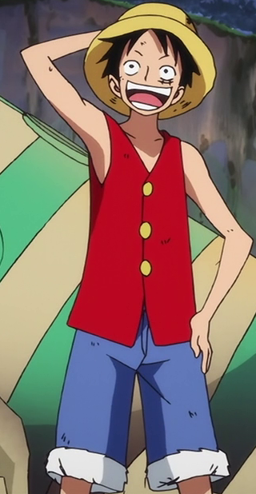

Quem é Monkey D. Luffy
Monkey D. Luffy,também conhecido como Luffy Chapéu de Palha ou Chapéu de Palha,é um pirata e o protagonista do anime e mangá One Piece. Ele é o fundador e o capitão do cada vez mais infame e poderoso Piratas do Chapéu de Palha, bem como um de seus principais lutadores. Seu sonho de vida é se tornar o Rei dos Piratas,encontrando o lendário tesouro deixado pelo falecido Rei dos Piratas,Gol D. Roger. Ele acredita que ser o Rei dos Piratas significa ter a maior liberdade do mundo.
Nascido na Vila Foosha, Luffy acidentalmente comeu a Gomu Gomu no Mi(atualmente conhecida como a hito hito no mi:modelo nika) aos 7 anos de idade, que deu ao seu corpo propriedades de borracha. Nesta época,Luffy conheceu Shanks,"o Ruivo", que lhe deu seu chapéu de palha como parte de uma promessa para que eles se encontrassem novamente. Luffy é o filho do líder Revolucionário Monkey D.Dragon,neto paterno do herói da Marinha Monkey D. Garp,irmão jurado do falecido "Punhos de Fogo" Portgas D. Ace e do chefe de gabinete Revolucionário Sabo, e filho adotivo de Curly Dadan. Ele é uma das poucas pessoas no mundo que carregam a Vontade de D.
Como é a aparência dele?

Luffy veste um short azul,sandálias e um colete vermelho com mangas. Luffy também tem uma cicatriz com dois pontos embaixo do olho esquerdo (que ele ganhou por se esfaquear usando uma faca em seu olho para mostrar para Shanks que ele era um homem) e cabelo preto curto e bagunçado.Ele foi gravemente ferido por Akainu na Batalha de Marineford, deixando uma grande cicatriz em forma de "X" em seu peito. Parecendo ser magro debaixo de sua camisa, ele tem um físico surpreendentemente bem construído. Ele é aparentemente muito baixo, pois sua altura é ofuscada pela maioria dos indivíduos na série
Personalidade dele
Luffy, apesar de bobo, tem um senso de justiça puro.Ele é extremamente impulsivo, extremamente sincero, extremamente determinado e extremamente companheiro, arriscando sua vida sem pensar duas vezes por um de seus "Nakamas" (Companheiros).
todas as recompensas do Luffy
- 3.000.000.000 Berries
- 1.500.000.000 Berries
- 500.000.000 Berries
- 400.000.000 Berries
- 300.000.000 Berries
- 100.000.000 Berries
- 30.000.000 Berries
Primeira recompensa
No final do Arlong Park Arc, depois que Luffy derrotou Arlong, os Chapéus de Palha espancaram o corrupto capitão da Marinha Nezumi para forçá-lo a devolver o tesouro de Nami. Nezumi, querendo vingança contra Luffy, garantiu pessoalmente uma recompensa de 30.000.000 por ele, dando-lhe a maior recompensa em East Blue. A quantia relativamente alta para uma recompensa pela primeira vez foi justificada porque Luffy derrotou os 3 principais piratas do East Blue, cada um com uma recompensa de mais de 10 milhões.
Segunda recompensa
Depois de perturbar fortemente o equilíbrio das Três Grandes Potências ao derrotar Crocodile, forçando o governo a reconhecer publicamente as atividades criminosas de Crocodile e de sua organização, levando à sua prisão e remoção de sua posição como corsário, a recompensa de Luffy foi aumentada para 100.000.000.
Terceira recompensa
Depois de liderar o ataque a Enies Lobby e a vitória contra vários agentes do governo, incluindo Rob Lucci e Blueno do CP9, para resgatar Nico Robin de passar pelos Portões da Justiça e ser executada, a recompensa de Luffy foi aumentada para 300.000.000. Esta recompensa tornaria oficialmente Luffy um Super Nova.
Quarta recompensa
Depois de atacar um Nobre Mundial e invadir e liderar uma fuga em massa sem precedentes de Impel Down, Luffy participou da Guerra de Marineford e causou muito caos no campo de batalha, assim sua recompensa foi aumentada para 400.000.000. Além disso, a revelação pública de sua relação com Monkey D. Dragon também pode ter influenciado.
Quinta recompensa
Aumentado para 500.000.000 por ter lutado ao lado de Law na derrota dos Piratas Donquixote. Boa Hancock colocou uma versão gigante da imagem de recompensa na parede de seu castelo.
Sexta recompensa
Por ser reconhecido como o irmão jurado do segundo em comando do Exército Revolucionário e líder da Grande Frota do Chapéu de Palha, perpetrando os eventos na Ilha Whole Cake e por derrotar Charlotte Cracker e Charlotte Katakuri, sua recompensa foi aumentada para 1.500.000.000.
Setima recompensa
A atual recompensa ela aconteceu por Luffy derrotar Kaidou, sua recompensa foi aumentada para 3.000.000.000 e ele foi oficialmente reconhecido como um dos Quatro Imperadores.
Poderes do Luffy
Por conta da Fruta do Diabo que comeu quando ainda era criança, Luffy adquiriu alguns poderes especiais, capazes de torná-lo um dos mais perigosos piratas do mundo! Seu corpo tornou-se todo de borracha, garantindo a ele habilidades únicas.
Luffy é capaz de esticar seus membros a distâncias incríveis, usando essa característica para atacar seus inimigos. Ele consegue deixar seu corpo em formatos estranhos, conseguindo surpreender seus oponentes que são incapazes de prever de onde vem os ataques.
Por ser feito de borracha, ele é imune a eletricidade e a ataques com tiros ou socos. Ele também aguenta grandes impactos, podendo cair de altitudes elevadas sem se ferir. Mas isso tudo não o torna imortal: Luffy pode ser ferido com objetos cortantes ou pontiagudos e também sofre com o calor ou frio extremos. Além disso, ele carrega a fraqueza padrão da sua Fruta do Diabo: Luffy é incapaz de nadar.
Além disso, no universo de One Piece, todos os seres possuem o Haki, uma energia que fica dormente e que só pode ser despertada depois de muito treinamento ou de um dom especial. Os Hakis são divididos em três tipos: o da Observação, que funciona como uma espécie de sexto sentido, o do Armamento, que cria uma espécie de armadura em volta do usuário, e o do Rei, um tipo extremamente raro, capaz de afetar a força de vontade das demais pessoas.
Luffy é uma das raras pessoas capazes de utilizar os três tipos de Haki. Ele combina seu domínio dessa energia vital com suas habilidades herdadas da Fruta do Diabo para performar ataques poderosos e únicos.
Depois de anos de treinamento, o Pirata do Chapéu de Palha desenvolveu algumas técnicas de combate que ele chamou de Gears. Cada Gear tem suas características próprias e possibilitam a ele tirar vantagens específicas dos seus poderes. A primeira Gear seria sua forma padrão. As demais se caracterizam por:
Segunda gear
Luffy usa suas veias e borracha para bombear seu sangue por todo o corpo em um ritmo acelerado. Dessa forma, ele amplia sua força e velocidade de maneiras incríveis! No entanto, esse estado acaba consumindo muita energia, deixando o pirata exausto após usar a técnica.
Terceira gear
Luffy bombeia ar entre os seus ossos para ampliar o seu tamanho e, desse jeito, conseguir atacar com ainda mais força. A desvantagem é que, desse jeito, ele perde mobilidade e fica do tamanho de uma criança pelo mesmo tempo em que ficou inflado
Quarta gear
O pirata cobre seus braços com Busoushoku Haki, uma espécie de armadura criada com sua energia vital. Ele também infla sua estrutura muscular, ganhando força e preservando sua elasticidade. Em contrapartida, Luffy é incapaz de ficar parado, precisando se movimentar o tempo todo e consumindo ainda mais energia.
Quinta gear ou conhecido como o DESPERTAR
Gear Fifth é o resultado do despertar da Hito Hito no Mi, Modelo: Nika. Luffy despertou sua fruta depois de ser derrotado por Kaido no telhado. Nesta forma, o cabelo e as roupas de Luffy ficam brancas e nuvens brancas flutuam em seu pescoço. A cor de seus olhos também muda e suas sobrancelhas ficam enroladas. Gear Fifth aumenta o poder de Luffy para outro nível. Luffy é capaz de tornar o ambiente emborrachado, o que lhe oferece proteção adicional, o que lhe permitiu desviar os ataques de Kaido de volta para ele.
Além de se tornar mais forte, Luffy também ganha mais liberdade para se mover, o que lhe permite usar sua fruta de maneiras engenhosas. Ele foi capaz de se transformar em um gigante, o que é algo que ele nunca poderia fazer, já que o Gear Third apenas aumentava o tamanho de diferentes partes do corpo de Luffy.
A fruta também afetou coisas que ocorrem naturalmente, como raios. Gear Fifth também torna Luffy mais caricatural, o que adiciona um toque cômico às lutas. Kaido experimentou os efeitos em primeira mão e ficou visivelmente surpreso, e comparou com algo que uma pessoa encontraria em um livro ilustrado. No geral, é seguro dizer que a Hito Hito no Mi, Modelo: Nika está segura nas mãos de Luffy, pois sua criatividade não tem limites.